Political Parties In Nigeria
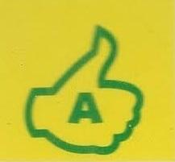
Accord Party (AP)
 Action Alliance Party (AA)
Action Alliance Party (AA)
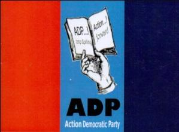
Action Democratic Party (ADP)
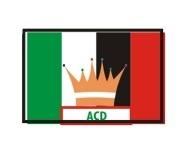
Advanced Congress Of Democrats Party (ACDP)
Advanced Peoples Democratic Alliance (APDA)
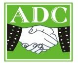
Advanced Democratic Congress (ADC)
 All Progressive Congress (APC)
All Progressive Congress (APC)
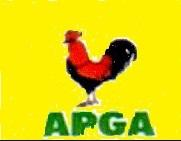
All Progressive Grand Alliance (APGA)
 Alliance for Democracy (AD)
Alliance for Democracy (AD)
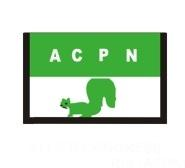
Allied Congress Party of Nigeria (ACPN)
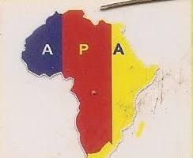
African People Alliance (APA)
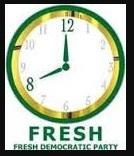
Fresh Democratic Party (FDP)
 Democratic Peoples Congress (DPC)
Democratic Peoples Congress (DPC)
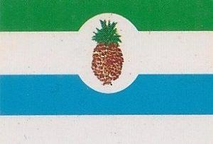
Democratic Peoples Party (DPP)
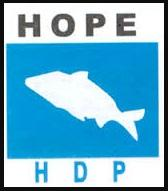
Hope Democratic Party (HDP)
 Indepenedent Democrats (IDP)
Indepenedent Democrats (IDP)
 Kowa Party (KOWA)
Kowa Party (KOWA)
 Labour Party (LP)
Labour Party (LP)
 Mega Progressive People Party (MPPP)
Mega Progressive People Party (MPPP)
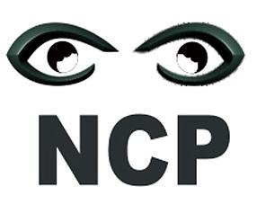
National Conscience Party (NCP)
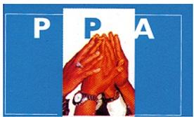
Progressive People Alliance (PPA)
 People Democratic Party (PDP)
People Democratic Party (PDP)
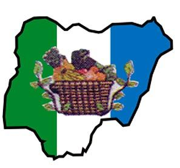
New Nigeria Peoples Party (NNPP)
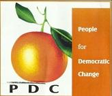
People for Democratic Change (PDC)
 People Democratic Movement (PDM)
People Democratic Movement (PDM)
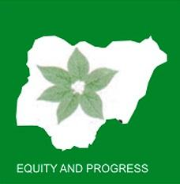
Peoples Party Of Nigeria (PPN)
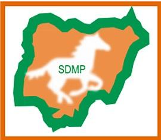
Social Democratic Party (SDP)
United Progressive Party (UPP)
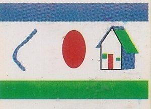
United Democratic Party (UDP)
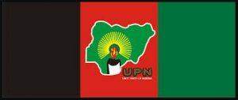
Unity Party of Nigeria (UPN)